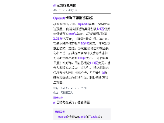
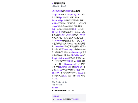

每天高频班次的 AI 领域要闻速览：发生了什么，为什么重要。

缩略图加载失败，点此查看海报
缩略图加载失败，点此查看海报据多家媒体报道，OpenAI最新一轮融资未达预期。 此前有报道称其计划以1.4万亿美元估值融资300亿美元，后估值预期降至1.25万亿美元；《金融时报》称，公司现已把融资目标下调至200亿美元，且首次交割金额预计更低。 该轮融资将由阿联酋投资者牵头，后续面向富裕个人的零售发行可能把总额补足到200亿美元。 《华尔街日报》补充称，目前已锁定110亿美元，部分大型投资者反应“冷淡”。 报道将融资遇冷部分归因于时机不佳：华尔街对AI基础设施重投入的疑虑升温，科技股出现明显抛售。
依据：可提取原文正文 · 可提取正文；不含交互图表、图片或付费隐藏内容
TechCrunch AI00:12原文链接 ↗
DeepSeek公开了《Super-agent：迈向更自主的Agent系统》一文，披露Personal Agent的底层架构思路，并附上GitHub原型链接。 按其描述，该架构设想让Agent在无人@或下指令时主动发现Bug、定位问题并提交修复PR，还能跨IM、GitHub等平台延续同一任务上下文。 系统分为Router与Worker两层：Router负责接收消息、分配任务和维护全局上下文，Worker负责并行执行，并可订阅PR评论等后续消息以减少转发。 为支持长期运行，DeepSeek设计了规则加模型的两级消息过滤、异步ReAct Loop、云端与本地分离的状态保存，以及独立Watchdog监控故障和无效循环；其中异步ReAct Loop已在DeepSeek Harness中实现但尚未默认开启。 初步实验在约300条消息、20项请求的环境下进行，Super-agent任务完成时间中位数12.4分钟、95分位15.7分钟，传统单Session方案在中性提示下95分位为29.5分钟；但取消事件直通后，Router决策次数增加约30%、缓存读取Token增加约37%。
依据：可提取原文正文 · 可提取正文；不含交互图表、图片或付费隐藏内容
量子位21:49原文链接 ↗